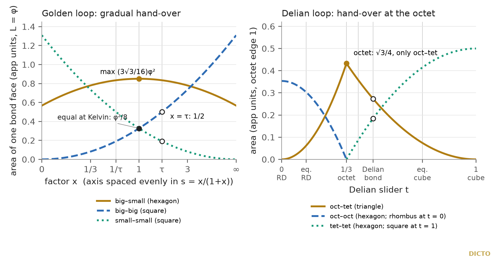
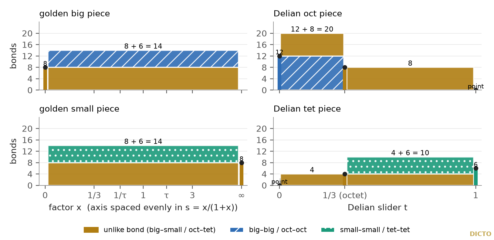
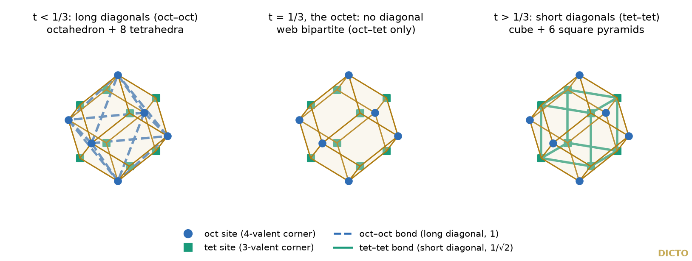
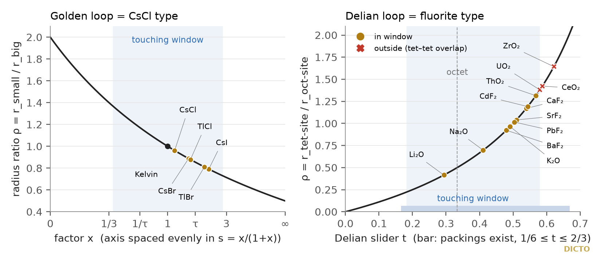

Theorem: both DICTONIC loops are weighted Voronoi (power) diagrams of one fixed crowd of points of two kinds, with one weight slid between the kinds; the bonds are the edges of the dual weighted-Delaunay web; the bond between unlike pieces never breaks inside a loop, while the two like bonds hand over, gradually in the golden loop and all at once, at the octet, in the Delian loop

DICTO's DICTONIC world in Kaleidohedra shows a web: one line for every face two pieces share. DICTO's idea was that this web should itself be a lattice that changes with the rhythm of the loop. We asked what that web is, exactly.
Paper #48 [1] cut the gaps between icosahedra at the golden point and placed the resulting pair, the Icosaxes and the Unborn Axes, in a one-parameter family T(x), T(1/x) of truncated octahedra (Koca's orbit [10]). Paper #51 [2] cut the octet by one sliding plane per tetrahedron–octahedron pair and found the Delian bond, Samson and Delilah. DICTO called the solids the DICTONIC SOLIDS and the pairs the DICTONIC BONDS, and in the app each family runs as a loop. On 25 October 2026 DICTO's idea was that the network of bonds should create a web of lattices that change with the rhythm of the loop. The app draws that web (Figure 5): one line per shared face, thicker for a larger face. Float runs on a small network suggested that bonds trade places along each loop. Two exact studies [S1, S2] answer what the web is, and a third [S3] tests the physical reading (§6); this paper reports them.
Both loops are pairs of pieces that fill space. Each piece sits on a point; the points never move. Only the shapes change.
Golden loop. T(x) is the convex hull of all permutations of (±(1 + x), ±x, 0), scaled so that its squares lie at distance L/2 from its centre, with L = φ (paper #48, Theorem 4). T(x) sits on the big sites B = φℤ³, T(1/x) on the small sites S = φℤ³ + (φ/2)(1, 1, 1), for x from 0 to ∞. We write s = x/(1 + x) in [0, 1]: then T(x) is the set of signed permutations of (1, s, 0)·L/2, and T(1/x) the same with 1 − s in place of s. At x = 1 both are Kelvin's truncated octahedron [20]; at x = τ (= φ, the name of the stop in paper #48 and the app) they are the Icosaxes and the Unborn Axes. "Big" and "small" name the two kinds of site (the kinds of #48, the Icosaxes big); for x < 1 the big piece is the smaller of the two, and the swap x ↔ 1/x exchanges them.
Delian loop. The pieces of paper #51 at slider t in [0, 1], with a = 3(1 − t)/2: the tetrahedron pieces sit on Q = (ℤ + ½)³/√2, the octahedron pieces on O = {n ∈ ℤ³ : n₁ + n₂ + n₃ odd}/√2, octet edge 1. At t = 0 the octahedron pieces are Kepler's rhombic dodecahedra, at t = 1/3 the octet, at t = 1 the tetrahedron pieces are cubes; in between lie the two equal-edged members, the half-and-half member and the Delian bond (Samson and Delilah).
Power diagram. Given sites ci with weights wi, the power cell of ci is the set of points p with |p − ci|² − wi ≤ |p − cj|² − wj for all j: a Voronoi cell in which each site is given a head start [3, 4]. Two cells meet in a plane perpendicular to the line between their sites (the power bisector). The cells are convex and fill space. Their dual, the weighted (regular) Delaunay subdivision, has an edge between two sites exactly when their cells share a face [3].
Each loop is one fixed crowd of points with one weight slid between the two kinds. The web of bonds is the classical dual web. The unlike bond never breaks; the like bonds hand over.
The classical members. Some members of both loops are classical. Every Delaunay tessellation is the power diagram of its own circumspheres [3, 23]. The octet (t = 1/3) is the Delaunay tessellation of the face-centred cubic lattice; its circumspheres sit on the octahedron centres (r² = 1/2) and the tetrahedron centres (r² = 3/8), a weight difference wQ − wO = −1/8. The octahedron–cuboctahedron honeycomb at x = 0 and x = ∞ is likewise a power diagram of its circumspheres (r² = φ²/4 and φ²/2), a weight difference −φ²/4 between octahedron and cuboctahedron. Kelvin's cells (x = 1), the rhombic dodecahedra (t = 0) and the cubes (t = 1) are ordinary Voronoi diagrams (of the surviving kind of site alone at t = 0 and t = 1). These are exactly the weights of the theorem below at those points. What the theorem adds is the whole family between these classical members.
| Loop | Bond | Face | Area (app units) | Alive | Shape of the curve |
|---|---|---|---|---|---|
| golden (L = φ) | big–small | hexagon (triangle at x = 0, ∞) | (√3/8)φ²·(x² + 4x + 1)/(1 + x)² | whole loop | rises on (0, 1), falls on (1, ∞); max (3√3/16)φ² ≈ 0.8502 at Kelvin; (√3/8)φ² ≈ 0.5668 at both ends |
| big–big | square, diagonal sL | φ²x²/(2(1 + x)²) | born at x = 0⁺ | strictly increasing, → φ²/2 as x → ∞ | |
| small–small | square, diagonal (1 − s)L | φ²/(2(1 + x)²) | dies as x → ∞ | strictly decreasing from φ²/2 at x = 0 | |
| Delian (octet edge 1) | oct–tet | triangle | (9√3/4)t² for t ≤ 1/3; (9√3/16)(1 − t)² for t ≥ 1/3 | exactly (0, 1) | rises to √3/4 (the octet triangle) at 1/3, then falls; a corner at 1/3, slopes 3√3/2 and −3√3/4 |
| oct–oct | hexagon (rhombus at t = 0) | (√2/4)(1 − 9t²) | exactly [0, 1/3) | strictly decreasing from √2/4 (the rhombic dodecahedron's rhombus) | |
| tet–tet | hexagon (square at t = 1) | (3t − 1)(5 − 3t)/8 = (1 − a²)/2 | exactly (1/3, 1] | strictly increasing to 1/2 (the cube's face) |
Table 1. The bond faces and their exact areas. Sample values: at Kelvin (x = 1) big–big = small–small = φ²/8 ≈ 0.32725; at x = τ big–big = 1/2, small–small = 1/(2φ²) ≈ 0.19098, big–small = (√3 + 3√15)/16 ≈ 0.8344; at the Delian bond oct–tet = 21/3√3/8 ≈ 0.2728 and tet–tet = 1/2 − 21/3/4 ≈ 0.1850.
Why: choose the weights so that every flat face of every piece is exactly the plane of equal weighted distance between the two points it separates. Then each piece is its point's weighted cell, and the rest is the classical duality.
Proof. (i) With the weights in (i), every facet plane of every piece of the app is the power bisector of the two sites that share it, for every s ∈ (0, 1) and every t in each of the regimes (0, 1/3) and (1/3, 1), as an identity in the parameter [S1, A2]. Every corner of the piece satisfies every other power inequality against every site within a fixed distance, with slack ≥ 0 on the whole open regime: the slacks are linear in s or t and have no root inside [S1, A1]. The facet planes' own vertex enumeration gives back exactly the piece's corners, and their normals sum to 0 with rank 3, so they bound a bounded region; together with A1 this is piece = power cell. A uniform distance bound shows that sites farther away cannot cut the cell [S1, A7]: every corner lies within ρ of its site, ρ² ≤ 2 in units of (L/2)² (golden) and ρ² ≤ 1 in units where the cube at t = 1 has edge 1 (Delian), and with the site lists out to D = 4 and D = 3 in those units the bound (D − ρ)² ≥ ρ² + |Δ| holds for every parameter ((4 − √2)² ≈ 6.69 ≥ 2 + 1; (3 − 1)² = 4 ≥ 1 + 3/4). The regime boundaries and the ends x = 0, ∞, t = 0, 1/3, 1 are checked by building the power cells from scratch among the fixed sites, with no use of the app's pieces, in exact arithmetic, and comparing with the app's pieces; at t = 0 and t = 1 the vanishing kind's cell is a single point [S1, B1]. At t = 1/3 and x = 0, ∞ the identity also follows from the circumsphere description of a Delaunay tessellation (above), an independent check. (ii) Power diagrams are dual to regular subdivisions [3], so two sites are bonded exactly when they span an edge of a dual cell. The face of each bond is computed in closed form [S1, A3] and checked at every sample, rational and irrational [S1, B2], and against the app's own web to 10⁻⁹ [S1, C2]. (iii) The monotonicity, birth and death points and the corner at 1/3 follow from the closed forms [S1, A6]; the ratio of the like bonds is s²/(1 − s)² = x², so they are equal only at x = 1; the square diagonals are sL and (1 − s)L, which add to L = φ. The swap: s ↔ 1 − s flips the sign of the weight, and the translation by (φ/2)(1, 1, 1) exchanges B and S, so the diagram at 1/x is the diagram at x translated with big and small exchanged; hence big–big(1/x) = small–small(x) and big–small is unchanged. The bond types present in each regime are read off the incidences of the dual cells (Corollary 3) [S1, B6]. ∎

The theorem tells how many bonds each piece has, where the unlike bond is strongest, and what the hidden dual lattice looks like at each moment of the loop.
Corollary 1 (bonds per piece). Exact counts [S1, B3, C4]:
| x = 0 | 0 < x < ∞ | x = ∞ | |
|---|---|---|---|
| golden big | 8 big–small (octahedron) | 14 = 8 big–small + 6 big–big | 14 = 8 + 6 (cuboctahedron) |
| golden small | 14 = 8 + 6 small–small (cuboctahedron) | 14 = 8 big–small + 6 small–small | 8 (octahedron) |
| t = 0 | 0 < t < 1/3 | t = 1/3 | 1/3 < t < 1 | t = 1 | |
|---|---|---|---|---|---|
| Delian oct | 12 oct–oct (rhombic dodecahedron) | 20 = 12 oct–oct + 8 oct–tet | 8 oct–tet | 8 oct–tet | none (point) |
| Delian tet | none (point) | 4 oct–tet | 4 oct–tet | 10 = 4 oct–tet + 6 tet–tet | 6 tet–tet (cube) |
Each golden piece's 6 squares always bond to its own kind: big–big for a big piece, small–small for a small one. What trades between the like bonds is their size, not the pieces they join; at an end, one kind's squares shrink to points.
Corollary 2 (the unlike bond's peak). The unlike bond is largest at Kelvin's cell in the golden loop, smoothly, with area (3√3/16)φ², and at the octet in the Delian loop, with a corner, with area √3/4.
Corollary 3 (the hidden dual lattice). The dual weighted-Delaunay cells are [S1, B6, B8] (volumes in units of (L/2)³ for the golden loop and, for the Delian loop, of the cube that the tetrahedron piece becomes at t = 1 (edge 1/√2 at octet edge 1); exact):
| Loop, range | Dual cells | Volumes |
|---|---|---|
| golden, 0 < x < ∞ | disphenoid tetrahedra, 2 big + 2 small sites: one subdivision throughout, no flip | 2/3 |
| golden, x = 0 and x = ∞ | square bipyramids (2 + 4 sites) | 8/3 |
| Delian, t < 1/3 | octahedra (6 O) and tetrahedra (3 O + 1 Q) | 4/3 and 1/12 |
| Delian, t = 1/3 | rhombic dodecahedra (6 O + 8 Q) | 2 |
| Delian, t > 1/3 | cubes (8 Q) and square pyramids (1 O + 4 Q) | 1 and 1/6 |
At t = 1/3 each rhombus of the dual rhombic dodecahedra trades its long diagonal (an oct–oct bond) for its short one (a tet–tet bond): a single flip (Figure 3). At t = 0 the dual is the octet itself; at t = 1 it is cubes.

Corollary 4 (the weight line). For fixed sites, the weights that give one and the same dual subdivision form the cones of the secondary fan [5, 6], its chambers being the triangulations; for periodic point sets see Alexeev [24, §5.12]. Each loop's weight runs along a segment. The golden segment stays inside one chamber except at its ends; the Delian segment lies in two non-maximal cones (its dual cells are not simplices, because the tied weights keep six oct sites co-spherical) that meet exactly once, at t = 1/3, in the cone of the rhombic dodecahedra.
Corollary 5 (the Delian bond). At the Delian bond, wQ − wO = 3/8 − 22/3/4 ≈ −0.02185: close to, but not at, the unweighted Voronoi point t = 1/2. The ratio of its two bond areas is oct–tet / tet–tet = 21/3√3 / (4 − 2·21/3).
Remark (the weights in earlier work). These weights agree with paper #51's cube Remark, w = (x − 1)/(4(x + 1)) at cube edge 1, and with the octet check of #51's study; the theorem proves them for every parameter, not only at samples. The golden volumes are (4/3)(1 + u)³ − 4u³ in units of (L/2)³, with u = s for big and u = 1 − s for small, always adding to L³; the Delian volumes are those of paper #51.
A weight in a power diagram can be read as the square of a ball's radius: the face between two touching balls passes through their point of contact. Read this way, the two loops are two classical crystal structures, and the range where the balls can touch ends exactly at Pauling's radius-ratio limits.
Why: the face between two balls is where their weighted distances agree, and that is the power bisector with weight r². Touching fixes the sum of the two radii, the weight fixes the difference of their squares, and the two together fix each radius.
Proof. (a) The radical plane of two balls is the set where |p − ci|² − ri² = |p − cj|² − rj², that is, 2p·(cj − ci) = |cj|² − |ci|² + wi − wj, which depends on the weights only through their differences [S2, A1a, A1b]; for touching balls it passes through the contact point [S2, A1c] (classical: [4, 7]). (b) Exact coset comparison with the Wyckoff positions [S2, A6]. (c) Let d be the unlike nearest distance and Δ the weight difference of the Main theorem. Then r1 + r2 = d and r1² − r2² = Δ give r1 − r2 = Δ/d. Golden: d = (√3/2)φ and Δ/d² = (2s − 1)/3, so rbig/d = (1 + s)/3 and rsmall/d = (2 − s)/3. Delian: d² = 3/8 and Δ/d² = 2t − 1, so rtet/d = t [S2, A2, A4]. (d) Golden: the big balls touch (2rbig = a = φ) exactly when (1 + s)/√3 = 1, at x = √3 + 1, ρ = √3 − 1, and the small balls touch at x = (√3 − 1)/2 by the swap. Delian: the oct balls touch (2rO = 1) at t = 1 − √(2/3), ρ = √(3/2) − 1, the tet balls (2rQ = 1/√2) at t = 1/√3, ρ = (√3 + 1)/2 [S2, A2e, A2f, A4c, A4d]. (e) Put u = r1 + r2; then r1,2 = (u ± Δ/u)/2, both radii grow with u and ρ moves monotonically towards 1, so the feasible u form an interval, nonempty exactly when the larger radius √|Δ|, with the other radius 0, fits. Golden: |Δ| ≤ (a/2)² = φ²/4 always. Delian: −Δ ≤ (1/2)² exactly when t ≥ 1/6, and Δ ≤ (1/(2√2))² exactly when t ≤ 2/3 [S2, A3, A4f]. And √|Δ| ≤ d holds for every parameter (|Δ| ≤ (a/2)² < d² golden, |Δ| ≤ 3/8 = d² Delian), so unlike balls never overlap at that u. ∎
Corollary 6 (the stops as balls). Under the contact map: golden x = 0 gives ρ = 2 and x = ∞ gives ρ = 1/2, both outside the window, where the only packing has the other kind as points; Kelvin (x = 1) forces ρ = 1, equal balls; x = τ gives ρ = √5/φ² = (3√5 − 5)/2 ≈ 0.8541, inside. Delian: the octet t = 1/3 gives ρ = 1/2, the Delian bond ρ = (3/2)·21/3 − 1 ≈ 0.8899, the unweighted Voronoi point t = 1/2 gives ρ = 1, all inside; t = 0 and t = 1 admit no packing at all; t = 1/6 and t = 2/3 are the end packings (touching face-centred cubic balls with the tet sites as points, and touching simple-cubic balls on the tet sites with the oct sites as points) [S2, A5].
Corollary 7 (an area identity). In the Delian contact model the oct–tet triangle has area (3√3/2)·roct² for t ≥ 1/3 and 6√3·rtet² for t ≤ 1/3 [S2, A7]. So compounds with the same oct-site radius have the same oct–tet area: BaF₂, Na₂O and K₂O, all with roct = 1.42 Å, share 5.239 Ų.
Placing real ionic crystals with Shannon's effective ionic radii [8] (as transcribed by the Imperial College Database of Ionic Radii, which takes all its data from [8]; not checked against the printed page) under the contact model gives Tables 2 and 3 and Figure 4. Every row was checked exactly: the radical cell built with w = r² is the app's piece at that x or t, with the bond counts and areas of Table 1 [S2, B2]. For every caesium chloride type and fluorite compound, "in the window" is the same as r⁺/r⁻ ≥ 0.732, Pauling's 8-coordination limit; for the antifluorites the same inequality holds with the ion on the 8-coordinated site in the numerator, r⁻/r⁺ ≥ 0.732 [S2, B3]. Areas are in app units (golden L = φ; Delian octet edge 1).
| Compound | r(cation), CN | r(anion), CN | ρ | x (exact) | big–small | big–big | small–small |
|---|---|---|---|---|---|---|---|
| CsCl | Cs⁺ 1.74, VIII | Cl⁻ 1.81, VI* | 0.9613 | 188/167 ≈ 1.126 | 0.8492 | 0.3671 | 0.2897 |
| CsBr | Cs⁺ 1.74, VIII | Br⁻ 1.96, VI* | 0.8878 | 109/76 ≈ 1.434 | 0.8412 | 0.4544 | 0.2209 |
| CsI | Cs⁺ 1.74, VIII | I⁻ 2.20, VI* | 0.7909 | 133/64 ≈ 2.078 | 0.8155 | 0.5966 | 0.1382 |
| TlCl | Tl⁺ 1.59, VIII | Cl⁻ 1.81, VI* | 0.8785 | 203/137 ≈ 1.482 | 0.8396 | 0.4666 | 0.2125 |
| TlBr | Tl⁺ 1.59, VIII | Br⁻ 1.96, VI* | 0.8112 | 233/122 ≈ 1.910 | 0.8225 | 0.5639 | 0.1546 |
Table 2. Caesium chloride type on the golden loop: the larger ion (the anion) on the big site; every row has 8 big–small + 6 big–big bonds per big piece and 8 big–small + 6 small–small per small piece, and lies inside the touching window. Radii in Å. *Shannon gives Cl⁻, Br⁻ and I⁻ only for CN VI; the CN VI value is used as a proxy for CN VIII.
| Compound | oct site (CN 8) | tet site (CN 4) | ρ | t | side of octet | oct–tet | like bond | window |
|---|---|---|---|---|---|---|---|---|
| CaF₂ | Ca²⁺ 1.12 | F⁻ 1.31 | 1.1696 | 0.5391 | > 1/3 | 0.2070 | tet–tet 0.2610 | in |
| SrF₂ | Sr²⁺ 1.26 | F⁻ 1.31 | 1.0397 | 0.5097 | > 1/3 | 0.2342 | tet–tet 0.2296 | in |
| BaF₂ | Ba²⁺ 1.42 | F⁻ 1.31 | 0.9225 | 0.4799 | > 1/3 | 0.2636 | tet–tet 0.1956 | in |
| CdF₂ | Cd²⁺ 1.10 | F⁻ 1.31 | 1.1909 | 0.5436 | > 1/3 | 0.2030 | tet–tet 0.2656 | in |
| PbF₂ (β) | Pb²⁺ 1.29 | F⁻ 1.31 | 1.0155 | 0.5038 | > 1/3 | 0.2398 | tet–tet 0.2231 | in |
| UO₂ | U⁴⁺ 1.00 | O²⁻ 1.38 | 1.3800 | 0.5798 | > 1/3 | 0.1720 | tet–tet 0.3014 | out |
| ThO₂ | Th⁴⁺ 1.05 | O²⁻ 1.38 | 1.3143 | 0.5679 | > 1/3 | 0.1819 | tet–tet 0.2900 | in |
| CeO₂ | Ce⁴⁺ 0.97 | O²⁻ 1.38 | 1.4227 | 0.5872 | > 1/3 | 0.1660 | tet–tet 0.3083 | out |
| ZrO₂ (cubic) | Zr⁴⁺ 0.84 | O²⁻ 1.38 | 1.6429 | 0.6216 | > 1/3 | 0.1395 | tet–tet 0.3389 | out |
| Li₂O (anti) | O²⁻ 1.42 | Li⁺ 0.59 | 0.4155 | 0.2935 | < 1/3 | 0.3358 | oct–oct 0.0794 | in |
| Na₂O (anti) | O²⁻ 1.42 | Na⁺ 0.99 | 0.6972 | 0.4108 | > 1/3 | 0.3382 | tet–tet 0.1094 | in |
| K₂O (anti) | O²⁻ 1.42 | K⁺ 1.37 | 0.9648 | 0.4910 | > 1/3 | 0.2524 | tet–tet 0.2086 | in |
Table 3. Fluorite and antifluorite on the Delian loop (radii in Å; oct site 8-coordinated, tet site 4-coordinated). In fluorite the cation sits on the oct sites; in antifluorite (Li₂O, Na₂O, K₂O) the anion does. Caution on names: the app's "oct" pieces sit on the 8-coordinated face-centred cubic sites, its "tet" pieces on the 4-coordinated tetrahedral holes. β-PbF₂ is the fluorite form, metastable at ambient (α is orthorhombic); placement is for β.

Agreements with crystal chemistry. The sites are exactly B2 and C1. The touching windows end at Pauling's limits; this is Pauling's own contact condition [9], rederived in the language of radical tessellations. Wang et al. [25] built a binary hard-sphere crystal of large spheres on a simple cubic lattice with a small sphere in every cubic pore (their "SC" crystal: the caesium chloride arrangement at the pore-filling size ratio √3 − 1) and found that the radical polyhedra of both the small and the large spheres have 14 faces, 6 quadrangles and 8 hexagons: that is the golden loop's window end x = √3 + 1, a published point on the loop. The five caesium chloride type halides lie inside the window at x ≈ 1.1–2.1, on the big-ion side of Kelvin, and the golden stop x = τ ≈ 1.618 lies among them (between CsBr/TlCl and TlBr/CsI). Each golden piece's 14 faces (8 unlike + 6 like) match the two body-centred cubic neighbour shells, 8 at (√3/2)a and 6 at a. Cubic ZrO₂ lies far outside the window (r⁺/r⁻ = 0.61), consistent with cubic ZrO₂ needing dopants to be stable at room temperature.
The balls are a reading of the geometry, not a model of the crystals. We tested where the reading fails, and why. The answer is mostly the radii, not the physics.
Three compounds fall outside the touching window with effective ionic radii, all beyond the tet–tet contact edge (√3 + 1)/2 ≈ 1.3660: UO₂ (ρ = 1.3800, 1.02 % beyond the edge), CeO₂ (1.4227, 4.15 %) and cubic ZrO₂ (1.6429, 20.27 %), the gap measured as (ρ − edge)/edge; and Li₂O lies on one side of the octet or the other depending on the radius convention [S3]. The misfit is not an artefact of the contact model: placing UO₂ and CeO₂ from their measured lattice constants (a = 5.47127 Å [28] and 5.411102 Å [29]) by the power-diagram weight alone, with no contact assumption, gives t = 0.5806 and 0.5878, still beyond 1/√3 ≈ 0.5774 [S3, Q1e].
| Misfit | Shift needed | Compared with | Verdict |
|---|---|---|---|
| UO₂ | +0.0102 Å on U⁴⁺, or −0.0140 Å on O²⁻ | additivity residual r⁺ + r⁻ − d = +0.011 Å against the measured lattice [28]; tabulation half-unit 0.005 Å | within data error |
| CeO₂ | +0.040 Å on Ce⁴⁺, or −0.055 Å on O²⁻ | about 6× its additivity residual (0.007 Å, [29]); crystal radii put it inside | a radius-convention effect; no named physical effect (pressure, temperature, gravity, stoichiometry) explains it at room conditions |
| cubic ZrO₂ | +0.170 Å on Zr⁴⁺ | in yttria-stabilised zirconia the charge-compensating oxygen vacancies sit next to Zr, while Y keeps 8-fold coordination [35]; reaching the window by averaging radii would need a Ca²⁺ cation fraction of 0.61 | explained by defect chemistry: Zr is not 8-coordinated, so the 8:4 input does not describe the real material |
| Li₂O (octet side) | +0.12 Å on Li⁺, or −0.24 Å on O²⁻ | crystal radii and the Li⁺ CN VI radius both cross the octet; pressure cannot decide it: 73.9 GPa would be needed, above the antifluorite → anticotunnite transition at 50 ± 5 GPa [32] | undecidable from the radii |
Table 4. The misfits, from the scale-anomaly study [S3, Q1, Q4, Q7]. Physical numbers there are estimates and labelled as such.
Pressure, temperature, gravity. In both structures every atom sits on a special position, so uniform compression or expansion scales all lengths alike and leaves ρ unchanged; pressure can move ρ only if anion and cation compress by different amounts. Even in the bound most favourable to entering the window (a bookkeeping bound: the whole bond shortening is charged to the anion's hard-sphere radius; K₀′ = 4 assumed for both, as in [31]), UO₂ would need 3.8 GPa (K₀ = 207 GPa [30]) and CeO₂ 18.9 GPa (K₀ = 230 GPa; its fluorite structure transforms at 31.5 GPa [31]); if the cation takes it, both move further out. In any case the radii are fitted to ambient structures, so neither pressure nor temperature can explain an ambient misfit. Heating does not help the reading either: above the superionic transition (for example 1430 K for CaF₂, 1350 K for Li₂O and 2670 K for UO₂, reference values quoted in [33]) the anion sublattice is highly disordered and the tet-site ball has no fixed site, so the model does not apply; UO₂ expands by 3.39 % from 293 K to 2670 K [34]. Gravity is negligible: a 1 m crystal of UO₂ is strained by its own weight by about 1.7 × 10⁻⁷, and the gravitational force between U⁴⁺ and O²⁻ is 3.8 × 10⁻³⁴ of their Coulomb force [S3, Q5].
The biggest effect is the radius convention. Moving from effective ionic radii to crystal radii (each cation +0.14 Å, each anion −0.14 Å) shifts ρ by 21–37 %, more than any physical effect: it puts all three misfits inside the window and moves Li₂O past the octet. Pauling's radius-ratio rule itself is a weak predictor: in about 5000 oxides, George et al. [27] found only 66 % of the tested local environments in agreement with the first rule, and only 13 % of the oxides satisfying the second to fifth rules together; they also note that Shannon radii depend on the environment and cannot be used for local-environment prediction. Shannon's own stated accuracy could not be verified, since the full text of [8] was not read; only the 0.01 Å tabulation step and his reliability keys were used.
Other limits. BaF₂ has r⁺/r⁻ = 1.08 > 1, and Na₂O (0.697) and K₂O (0.965) lie far above the 0.414 upper limit for 4-coordination, yet all three are fluorite or antifluorite; the model tests only overlap and has no upper "rattling" limit. The radical faces are not the distance shells: in fluorite with t > 1/3 the cation has 12 cation neighbours at a/√2 but no cation–cation face. The halide radii are CN VI proxies; the radii come from a transcription of Shannon's table. Left out: NH₄Cl, the metallic B2 alloys and Rb₂O, for lack of verified radii.
DICTO's web of bonds is a lattice that changes with the loop, as was DICTO's idea: the classical dual of a weighted Voronoi diagram. In the golden loop it changes only in size; in the Delian loop it changes its shape once, at the octet.
Both DICTONIC loops are one fixed crowd of points with one weight slid between two kinds, and the web of bonds is the dual weighted-Delaunay web. Its rhythm differs between the two loops. In the golden loop the dual never flips: the like bonds trade size in the ratio x², equal at Kelvin's cell, and the whole loop is symmetric under x ↔ 1/x. In the Delian loop the dual flips once, at the octet, where every rhombus of a hidden rhombic dodecahedron exchanges its long diagonal for its short one, and the octet is the one member whose web joins only unlike pieces. Read as balls, the loops are the caesium chloride and fluorite structures, and Pauling's classical limits mark where the balls can touch. Open: the scale-anomaly study (§6) and the keyed bond's web. The prior-art search is reported in Appendix A.
Power diagrams, their duality with weighted Delaunay subdivisions, radical tessellations of ball packings, the two crystal structures and Pauling's rule are all classical. What we did not find is the family between their classical members along these two loops.
Known. Power (Laguerre, weighted Voronoi) diagrams and their duality with regular triangulations [3, 4]; regular subdivisions change only at the walls of the secondary fan [5, 6], including for periodic decompositions (Alexeev [24, §5.12]); every Delaunay tessellation is the power diagram of its circumspheres [3, 23], so the octet at t = 1/3 and the octahedron–cuboctahedron honeycomb at x = 0, ∞ are power diagrams with the weights of the Main theorem, and x = 1, t = 0 and t = 1 are ordinary Voronoi diagrams (at t = 0 and t = 1 of one kind of site alone); radical tessellations of packings of balls of two or more sizes [7], and Voronoi–Dirichlet and radical polyhedra in crystal chemistry and coordination [18, 19, 21]; two unequal truncated octahedra on a body-centred lattice as Laguerre cells (general; noted in paper #48 [1]); the octet, rhombic dodecahedron and cube connections [11]; the T(x) orbit [10]; ionic radii [8] and the radius-ratio rule [9]; the window ends are Pauling's contact limits [9]; radius-ratio-dependent packings of two sphere sizes (Murray and Sanders [26]); a binary hard-sphere crystal of large spheres on a simple cubic lattice with a small sphere in every cubic pore, whose radical polyhedra all have 14 faces (Wang et al. [25], their "SC" crystal; in our reading the caesium chloride arrangement at size ratio √3 − 1); caesium chloride type and other binary crystals of colloids and nanoparticles whose phase is set by the size ratio [12–17]. Paper #51's cube Remark [2] and its octet check already gave the two weights at samples. Voronoi's theory of Delaunay subdivisions of lattices (Erdahl [22]) is related, but treats lattices, not two kinds of weighted sites.
Not found, in the sources listed in Appendix A: the closed-form bond areas of both loops; the contrast between the golden loop (no flip) and the Delian loop (one flip, at the octet); the like-bond ratio x² and the diagonal sum φ; the sequence of dual cells between the classical end and middle members; the octet as the only member with a bipartite web; the contact maps ρ = (x + 2)/(2x + 1) and ρ = t/(1 − t); the Delian packing range 1/6 ≤ t ≤ 2/3. These are elementary consequences of standard theory and may well be known in some form; "not found" is limited to those sources, which include the prior-art search of 25 October 2026 summarised in Appendix A.
[1] DICTO, "The Golden Split: Icosahedra, Unborns and AXE Become Two Convex Space-Fillers", paper #48, DICTO DOI: 10.5281/zenodo.23596362 (2026).
[2] DICTO, "The Delian Bond: Samson, Delilah and the Octet Between Kepler's Rhombic Dodecahedron and the Cube", paper #51, DICTO DOI: 10.5281/zenodo.23606828 (2026).
[3] F. Aurenhammer, "Power diagrams: properties, algorithms and applications", SIAM Journal on Computing 16 (1987) 78–96, doi:10.1137/0216006.
[4] H. Imai, M. Iri, K. Murota, "Voronoi diagram in the Laguerre geometry and its applications", SIAM Journal on Computing 14 (1985) 93–105, doi:10.1137/0214006.
[5] I. M. Gelfand, M. M. Kapranov, A. V. Zelevinsky, Discriminants, Resultants, and Multidimensional Determinants, Birkhäuser, Boston (1994), doi:10.1007/978-0-8176-4771-1.
[6] J. A. De Loera, J. Rambau, F. Santos, Triangulations: Structures for Algorithms and Applications, Springer (2010), doi:10.1007/978-3-642-12971-1.
[7] B. J. Gellatly, J. L. Finney, "Characterisation of models of multicomponent amorphous metals: the radical alternative to the Voronoi polyhedron", Journal of Non-Crystalline Solids 50 (1982) 313–329, doi:10.1016/0022-3093(82)90093-X.
[8] R. D. Shannon, "Revised effective ionic radii and systematic studies of interatomic distances in halides and chalcogenides", Acta Crystallographica A32 (1976) 751–767, doi:10.1107/S0567739476001551; values as transcribed by the Database of Ionic Radii, Imperial College, http://abulafia.mt.ic.ac.uk/shannon/ (viewed 25 October 2026).
[9] L. Pauling, "The principles determining the structure of complex ionic crystals", Journal of the American Chemical Society 51 (1929) 1010–1026, doi:10.1021/ja01379a006.
[10] N. O. Koca, M. Koca, A. Al-Mukhaini, A. Al-Qanobi (arXiv author order), "Quaternionic representations of the pyritohedral group, related polyhedra and lattices", arXiv:1506.04600 (2015); published as "Symmetry of the pyritohedron and lattices", SQU Journal for Science 21(2) (2016) 139–149, doi:10.24200/squjs.vol21iss2pp139-149.
[11] E. Knoll, S. Morgan, "Finding the Dual of the Tetrahedral-Octahedral Space Filler", Bridges: Mathematical Connections in Art, Music, and Science (2003) 205–212.
[12] M. E. Leunissen, C. G. Christova, A.-P. Hynninen, C. P. Royall, A. I. Campbell, A. Imhof, M. Dijkstra, R. van Roij, A. van Blaaderen, "Ionic colloidal crystals of oppositely charged particles", Nature 437 (2005) 235–240, doi:10.1038/nature03946.
[13] A.-P. Hynninen, M. E. Leunissen, A. van Blaaderen, M. Dijkstra, "CuAu structure in the restricted primitive model and oppositely charged colloids", Physical Review Letters 96 (2006) 018303, doi:10.1103/PhysRevLett.96.018303.
[14] E. V. Shevchenko, D. V. Talapin, N. A. Kotov, S. O'Brien, C. B. Murray, "Structural diversity in binary nanoparticle superlattices", Nature 439 (2006) 55–59, doi:10.1038/nature04414.
[15] D. Nykypanchuk, M. M. Maye, D. van der Lelie, O. Gang, "DNA-guided crystallization of colloidal nanoparticles", Nature 451 (2008) 549–552, doi:10.1038/nature06560.
[16] S. Y. Park, A. K. R. Lytton-Jean, B. Lee, S. Weigand, G. C. Schatz, C. A. Mirkin, "DNA-programmable nanoparticle crystallization", Nature 451 (2008) 553–556, doi:10.1038/nature06508.
[17] R. J. Macfarlane, B. Lee, M. R. Jones, N. Harris, G. C. Schatz, C. A. Mirkin, "Nanoparticle superlattice engineering with DNA", Science 334 (2011) 204–208, doi:10.1126/science.1210493.
[18] V. A. Blatov, "Voronoi–Dirichlet polyhedra in crystal chemistry: theory and applications", Crystallography Reviews 10 (2004) 249–318, doi:10.1080/08893110412331323170.
[19] M. O'Keeffe, "A proposed rigorous definition of coordination number", Acta Crystallographica A35 (1979) 772–775, doi:10.1107/S0567739479001765.
[20] W. Thomson (Lord Kelvin), "On the division of space with minimum partitional area", Philosophical Magazine 24 (1887) 503–514, doi:10.1080/14786448708628135.
[21] F. M. Richards, "The interpretation of protein structures: total volume, group volume distributions and packing density", Journal of Molecular Biology 82 (1974) 1–14, doi:10.1016/0022-2836(74)90570-1.
[22] R. M. Erdahl, "Zonotopes, dicings, and Voronoi's conjecture on parallelohedra", European Journal of Combinatorics 20 (1999) 527–549, doi:10.1006/eujc.1999.0294.
[23] F. Aurenhammer, "Voronoi diagrams — a survey of a fundamental geometric data structure", ACM Computing Surveys 23 (1991) 345–405, doi:10.1145/116873.116880.
[24] V. Alexeev, "Complete moduli in the presence of semiabelian group action", Annals of Mathematics 155 (2002) 611–708, doi:10.2307/3062130; arXiv:math/9905103 (§5.12, generalized secondary polytopes for periodic decompositions).
[25] D. Wang, X. An, D. Gou, H. Zhao, L. Wang, F. Huang, "DEM construction of binary hard sphere crystals and radical tessellation", AIP Advances 8 (2018) 105203, doi:10.1063/1.5052478.
[26] M. Murray, J. Sanders, "Close-packed structures of spheres of two different sizes II. The packing densities of likely arrangements", Philosophical Magazine A 42 (1980) 721–740, doi:10.1080/01418618008239380.
[27] J. George, D. Waroquiers, D. Di Stefano, G. Petretto, G.-M. Rignanese, G. Hautier, "The limited predictive power of the Pauling rules", Angewandte Chemie International Edition 59 (2020) 7569–7575, doi:10.1002/anie.202000829.
[28] G. Leinders, T. Cardinaels, K. Binnemans, M. Verwerft, "Accurate lattice parameter measurements of stoichiometric uranium dioxide", Journal of Nuclear Materials 459 (2015) 135–142, doi:10.1016/j.jnucmat.2015.01.029 (abstract read).
[29] NIST, Standard Reference Material 674a, certificate (1989), Table 3: CeO₂ lattice parameter (information value).
[30] M. Idiri, T. Le Bihan, S. Heathman, J. Rebizant, "Behavior of actinide dioxides under pressure: UO₂ and ThO₂", Physical Review B 70 (2004) 014113, doi:10.1103/PhysRevB.70.014113 (abstract read).
[31] S. Duclos, Y. Vohra, A. Ruoff, A. Jayaraman, G. Espinosa, "High-pressure x-ray diffraction study of CeO₂ to 70 GPa and pressure-induced phase transformation from the fluorite structure", Physical Review B 38 (1988) 7755–7758, doi:10.1103/PhysRevB.38.7755 (abstract read).
[32] A. Lazicki, C.-S. Yoo, W. J. Evans, W. E. Pickett, "Pressure-induced antifluorite-to-anticotunnite phase transition in lithium oxide", Physical Review B 73 (2006) 184120, doi:10.1103/PhysRevB.73.184120 (abstract read).
[33] P. C. M. Fossati, A. Chartier, A. Boulle, "Structural aspects of the superionic transition in AX₂ compounds with the fluorite structure", Frontiers in Chemistry 9 (2021) 723507, doi:10.3389/fchem.2021.723507.
[34] IAEA-TECDOC-1496, Thermophysical Properties Database of Materials for Light Water Reactors and Heavy Water Reactors, International Atomic Energy Agency, Vienna (2006), Table 1 (UO₂ thermal expansion, recommending D. G. Martin 1988).
[35] P. Li, I-W. Chen, J. E. Penner-Hahn, "X-ray-absorption studies of zirconia polymorphs. II. Effect of Y₂O₃ dopant on ZrO₂ structure", Physical Review B 48 (1993) 10074–10081, doi:10.1103/PhysRevB.48.10074 (abstract read).
[S1] DICTO, exact study of the web of bonds (studies/2026-10-25-web-of-bonds, commit __COMMIT__): scripts/symbolic.py → data/checks/symbolic-checks.txt (part A, whole regimes, 55 checks), scripts/samples.py → samples-checks.txt (part B, 10 golden and 11 Delian parameters, 211 checks), scripts/app_dump.mjs + check_app.py → app-checks.txt (part C, the app's own pieces and web, 105 checks).
[S2] DICTO, physical anchors study (studies/2026-10-25-physical-anchors, commit __COMMIT__): scripts/symbolic.py → symbolic-checks.txt (part A, 32 checks), scripts/compounds.py → compounds-checks.txt and data/raw/compounds.json (part B, 29 checks), scripts/crossref_check.py → data/raw/crossref.json.
[S3] DICTO, scale-anomaly study (studies/2026-10-25-scale-anomalies, commit __COMMIT__): scripts/anomalies.py → data/checks/anomalies-checks.txt (24 checks; Q1 error bars, Q2 pressure, Q3 temperature, Q4 metastability, Q5 gravity) and data/raw/values.json (every external number, with how its source was read).
DICTO's reference library (kaleidohedra-references): nine ask-library queries (power diagram / Laguerre / weighted Voronoi; contact graph of a space-filling; the Koca truncated-octahedron family on a body-centred lattice; the octet / rhombic dodecahedron / cube family; regular triangulations, flips and the secondary polytope; caesium chloride type binary colloidal crystals with tunable size ratio; radical tessellation and Laguerre–Voronoi polyhedra of sphere packings in crystals; ionic radii, radius ratio, coordination and Pauling's rules; the fluorite structure and the tetrahedral holes of the face-centred cubic lattice), and its index, reading list and README searched by keyword. Nothing was found there on power diagrams, Laguerre or radical tessellations, contact graphs, secondary polytopes, ionic radii or radius-ratio rules; the nearest entries were Koca et al. 2015 [10], Erdahl 1999 [22] and Garber 2019 (Voronoi's theory for lattices), and Cadotte, Dshemuchadse, Damasceno, Newman and Glotzer 2016 (binary hard tetrahedra and octahedra, not balls). Web, 25 October 2026: one search for radical tessellation in ionic crystals, which found no paper linking power diagrams with ionic radii, caesium chloride or fluorite. References [3–5, 7–9, 12–19, 21, 22]: every DOI checked on Crossref (title, journal, year, volume and pages); none of these papers was read in full for this paper. Reference [11] is cited as in paper #51. Prior-art search, 25 October 2026 (file prior-art.md in this paper's folder): four further ask-library queries (power diagram / Laguerre and radius ratio; radical Voronoi binary packing CsCl; lattice Delaunay subdivisions, L-types and the secondary fan; Laguerre weight flips), still with no power-diagram, radical-tessellation or ionic-radius paper in the library; about 15 web queries (radical, power and Laguerre tessellation with caesium chloride, fluorite, ionic radii, radius ratio, binary hard-sphere crystals, bidisperse foams, Fischer–Koch, Blatov / ToposPro, periodic secondary fans and Delone subdivisions, Delaunay as a power diagram); the full text of Alexeev [24] searched for its periodic sections; Crossref for every DOI, including [6], [20] and [23–27]. Also identified: Rybnikov 1999 (liftings of cell complexes), Richard, Oger, Troadec and Gervois 1998 (radical tessellation of binary random assemblies), Koch 1973 (Dirichlet domains of cubic lattice complexes), Erdahl and Rybnikov (L-types as secondary cones), Schürmann 2010, Hopkins, Stillinger and Torquato 2012. Identified but not read in full: Aurenhammer's 1987 paper on criteria for power diagrams (Discrete and Computational Geometry 2, 49–64), Blatov 2004 [18], Koch 1973, Richard et al. 1998. An independent adversarial review of Draft v2 (referee report review-fable.md in this paper's folder) recomputed all formulas, counts, dual cells, windows, stops and table values with its own code, and checked every DOI; no changes to numbers or theorems resulted, only to wording and scope. Not reached: Google Scholar itself, and closed-form face-area tables in crystal-chemistry handbooks. For §6, references [28, 30–32, 35] were read in their abstracts, [27, 33] and [34] in full text or saved excerpt, [29] in its table; facts from search summaries only were left out or labelled [S3].
| Study | Part | Checks | PASS | FAIL |
|---|---|---|---|---|
| web of bonds [S1] | A symbolic, whole regimes (A1–A7) | piece = power cell, areas, volumes, face to face, monotonicity, distance bound | 55 | 0 |
| B exact samples (B1–B8) | cells from scratch at 10 golden and 11 Delian parameters, rational and irrational | 211 | 0 | |
| C app cross-check (C1–C4) | frame, every app bond area, counts, float findings | 105 | 0 | |
| physical anchors [S2] | A symbolic (A1–A7) | weight = r², maps, windows, feasibility, stops, B2/C1, area identity | 32 | 0 |
| B exact cells (B0–B3) | Kelvin and rhombic dodecahedron sanity, 9 loop stops, 17 compounds, Pauling = window | 29 | 0 | |
| scale anomalies [S3] | E exact edges, Q1–Q5 | window edges, error bars, pressure and temperature bounds, metastability, gravity (physical numbers are estimates) | 24 | 0 |
| total | 456 | 0 | ||
Exact arithmetic: Python fractions over ℚ, ℚ(√5), ℚ(√2), ℚ(√6), ℚ(∛2) and ℚ(∛6), and sympy for everything that depends on the parameter; a number is zero only if all its field coefficients are; floats only choose candidate plane triples and serve as the app cross-check. Golden samples x = 0, 1/3, 1/2, 1, 2, 3, τ, 1/τ, √2, ∞; Delian samples t = 0, 1/6, 1/4, 1/3, 1/2, 2/3, 1 and the stops (2√6 − 3)/15, 1 − ∛6/3, 1 − (2/3)·2−1/3, 5/3 − (2/3)√2.